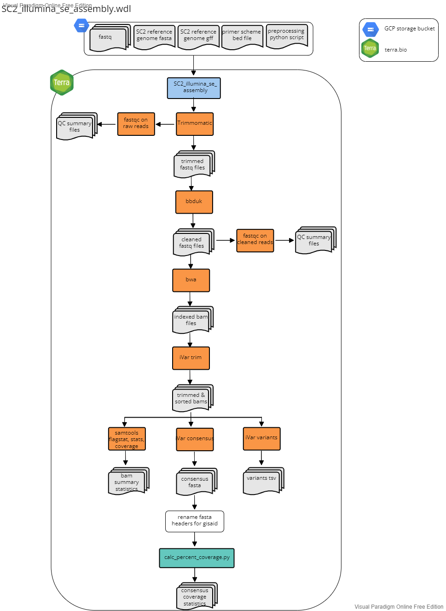

Assembly Workflows
The following three workflows describe the reference based assembly methods for paired-end and single end illumina seuqencing data and ONT sequencing data. Each workflow accepts "sample" as the root entity type.
Illumina PE
File: SC2_illumina_pe_assembly.wdl
This workflow was developed for the assembly of Illumina 150 bp paired-end read data using the Illumina Nextera XT library prep protocol. The workflow accepts "sample" as the root entity type. The workflow will:
- Use Seqyclean to quality filter and trim raw fastq files
- Seqyclean parameters include a minimum read length set to 70 bp and quality trimming set to a minimum Phred quality score of 30.
- Run FastQC on both the raw and cleaned reads
- Align reads to the reference genome using bwa and then sort the bam by coordinates using Samtools
- Use iVar trim to trim primer regions and then sort the trimmed bam by coordinates using Samtools
- Use iVar variants to call variants from the trimmed and sorted bam
- iVar variants parameters include a minimum quality score set to 20, a minimum variant base frequency set to 0.6 and a minimum read depth set to 10.
- Use iVar consensus to call the consensus genome sequence from the trimmed and sorted bam
- iVar consensus parameters include a minimum quality score set to 20, a minimum variant base frequency set to 0.6 and a minimum read depth set to 10.
- Use Samtools flagstat, stats, and coverage to output statistics from the bam
- Rename the fasta header of consensus sequences in the GISAID-acceptable format: CO-CDPHE-{sample_id}
- Calculate the percent coverage using the
calc_percent_coverage.pyscript available in the python_scripts directory of this repo.

Inputs
1. Terra Data Table
The terra data table must include the following columns as listed below. Note that optional columns are not neccessary for the assembly workflow but must be present for the SC2_lineage_calling_and results.wdl and Transfer workflows described below under Lineage Calling Workflows and Transfer Workflows, respecitively.
| column header | description |
|---|---|
entity:sample_id |
column with the list of sample names. (e.g. entity:covwwt-0203_id) |
fastq_1 |
The google bucket path to the R1 fastq file. |
fastq_2 |
The google bucket path to the R2 fastq file. |
out_dir |
User defined google bucket for where the files will be transfered during the transfer workflows. |
workbook_path |
(optional; required for lineage calling workflow) |
project_name |
(optional; requried for lineage calling workflow) |
2. Terra Workspace Data
See setup.
3. Setting Up the Workflow Inputs
For setting up the worklfow inputs, use the SC2_illumina_pe_assembly-input.json in the workflow_inputs directory.
| workflow variable | attribute (input syntax into workflow) |
|---|---|
adapters_and_contaminants |
workspace.adapters_and_contaminants_fa |
calc_percent_coverage_py |
workspace.covid_calc_percent_coverage_py |
covid_genome |
workspace.covid_genome_fa |
covid_gff |
workspace.covid_genome_gff |
fastq_1 |
this.fastq_1 |
fastq_2 |
this.fastq_2 |
primer_bed |
workspace.artic_v4-1_bed |
s_gene_amplicons |
workspace.artic_v4-1_s_gene_amplicons |
sample_name |
this.{entity_name}_id |
Outputs
| WDL task name | software/program | variable name | description |
|---|---|---|---|
| seqyclean | seqyclean | filtered_reads_1 |
file |
| seqyclean | seqyclean | filtered_reads_2 |
file |
| seqyclean | seqyclean | seqyclean_summary |
file |
| fastqc as fastqc_raw | fastqc | fastqc_raw1_html |
file |
| fastqc as fastqc_raw | fastqc | fastqc_raw1_zip |
file |
| fastqc as fastqc_raw | fastqc | fastqc_raw2_html |
file |
| fastqc as fastqc_raw | fastqc | fastqc_raw2_zip |
file |
| fastqc as fastqc_cleaned | fastqc | fastqc_clean1_html |
file |
| fastqc as fastqc_cleaned | fastqc | fastqc_clean1_zip |
file |
| fastqc as fastqc_cleaned | fastqc | fastqc_clean2_html |
file |
| fastqc as fastqc_cleaned | fastqc | fastqc_clean2_zip |
file |
| align_reads | bwa and samtools | out_bam |
file |
| align_reads | bwa and samtools | out_bamindex |
file |
| align_reads | bwa and samtools | assembler_version |
string recording the version for bwa, this information is used later for submitting to public repositories. |
| ivar trim | ivar trim and samtools | trim_bam |
file |
| ivar trim | ivar trim and samtools | trimsort_bam |
file |
| ivar trim | ivar trim and samtools | trimsort_bamindex |
file |
| ivar variants | ivar variants | variants |
vcf file formatted as a tsv |
| ivar consensus | ivar consnesus | consensus |
fasta file of consensus genome, Ns are called in places with less than 10 bp read depth. |
| bam_stats | samtools flagstat, stats, percent_coverage | flagstat_out |
file |
| bam_stats | samtools flagstat, stats, percent_coverage | stats_out |
file |
| bam_stats | samtools flagstat, stats, percent_coverage | covhist_out |
file |
| bam_stats | samtools flagstat, stats, percent_coverage | cov_out |
file |
| bam_stats | samtools flagstat, stats, percent_coverage | cov_s_gene_amplcions_out |
file |
| bam_stats | samtools flagstat, stats, percent_coverage | cov_s_gene_out |
file |
| rename_fasta | N/A | renamed_consensus |
fasta file; consensus genome sequence with the fasta header renamed to be CO-CDPHE-{sample_name} |
| calc_percent_cvg | calc_percent_coverage.py | percent_cvg_csv |
csv file, see calc_percent_cvg.py script readme for details found in the ./python_scripts directory of this repository. |
Illumina SE
This workflow is no longer maintained.
File: SC2_illumina_se_assembly.wdl
This workflow was developed for the assembly of Illumina 72 bp single-end read data using the Illumina COVIDSEQ library prep protocol. The workflow accepts "sample" as the root entity type. The workflow will:
- Use Trimmomatic and bbduk to quality filter, trim, and remove adapters from raw fastq files
- Trimmomatic parameters inlcude a sliding widnow set to trim reads when the 4bp sliding window quality score falls below a mean Phred quality score of 30 (i.e. 4:30) and a minimum read lenght of 25 bp.
- bbduck parameters include adapter trimming set to trim everything to the right of a kmer match and removal of PhiX sequences.
- Run FastQC on both the raw and cleaned reads
- Align reads to the reference genome using bwa and then sort the bam by coordinates using Samtools
- Use iVar trim to trim primer regions and then sort the trimmed bam by coordinates using Samtools
- Use iVar variants to call variants from the trimmed and sorted bam
- iVar variants parameters include a minimum quality score set to 20, a minimum variant base frequency set to 0.6 and a minimum read depth set to 10.
- Use iVar consensus to call the consensus genome sequence from the trimmed and sorted bam
- iVar consensus parameters include a minimum quality score set to 20, a minimum variant base frequency set to 0.6 and a minimum read depth set to 10.
- Use Samtools flagstat, stats, and coverage to output statistics from the bam
- Rename the fasta header of consensus sequences in the format: CO-CDPHE{sample_id}
- Calculate the percent coverage using the
calc_percent_coverage.pyscript available in the python_scripts directory of this repo.

Inputs
1. Terra Data Table
The terra data table can be generated using the preprocess python scripts available in the data preprocessing repository. The terra data table must include the following columns as listed below. Note that optional columns are not neccessary for the assembly workflow but be present for the SC2_lineage_calling_and results.wdl and Transfer workflows described below under Lineage Calling Workflows and Transfer Workflows, respectively.
entity:sample_id: column with the list of sample names/ids. Note that if there is more than one data table in the Terra Workspace, you need to add a number after the word sample to keep the datatables seperate (e.g.entity:sample2_id).fastq: The google bucket path to the fastq file.seq_run(optional): the name of the sequencing run (e.g. NEXSEQ_101)tech_platform(optional) : e.g. Illumina NexSeqread_type(optional): singleprimer_set(optional): e.g. COVIDSeqV3plate_name(optional): name of sequencing plateplate_sample_well(optional): location of well on sequencing plateout_dir(optional): user defined google bucket fro where the files will be transfered during the transfer workflows.
2. Terra Workspace Data
The following reference files can be found in the workspace_data directory and the python_scripts directory. These files should be saved as Workspace data in your Terra Workspace. To do so, upload the files to a google bucket an link the file path to the wrokspace data variable. Once saved as workspace data variables, they can be used as inputs for the workflow.
covid_genome: the path to the google bucket directory contianing the SARS-CoV-2 reference genome fasta (we use NCBI genbank ID MN908947.3).covid_gff: the path to the google bucket directory containing the SARS-CoV-2 reference genome gff annotation file (we use NCBI genbank ID MN908947.3)primer_bed: the path to the google bucket directory containing a bed file with the primers used for amplicon sequencing- currenly we have bed files for Artic V3, Artic V4, Artic V4.1 and Midnight.
preprocess_python_script: [do we want to change the name of this variable in the WDL to match the python script name?] the path to the google bucket containing thecalc_percent_coverage.pyscript.
Below is a summary of the workflow input variables along with the syntax used for the attribute column when setting up the workflow to run on Terra.bio. For the attributes, the "this." syntax refers Terra to pull the variable from the terra datatable (#1 above). The "workspace." syntax refers Terra to pull the variable from the terra workspace data (#2 above).
| workflow variable | attribute (input syntax into workflow) |
|---|---|
covid_genome |
workspace.covid_genome |
covid_gff |
workspace.covid_gff |
fastq |
this.fastq |
preprocess_python_script |
workspace.preprocess_python_script |
primer_bed |
workspace.V4-1Artic |
sample_id |
this.sample{terra_datatable_name}_id |
Outputs
1. Output Files from Trimmomatic and ddbuk
trimmed_reads: filetrim_stats: filefiltered_reads: fileadapter_stats: filePhiX_stats: file
2. Output Files from FastQC
fastqc_raw1_html: filefastqc_raw1_zip: filefastqc_raw2_html: filefastqc_raw2_zip: filefastqc_clean1_html: filefastqc_clean1_zip: filefastqc_clean2_html: filefastqc_clean2_zip: file
3. Output files from bwa and samtools (align reads)
out_bam: file
4. Output files from iVar trim and samtools
trim_bam: filetrimsort_bam: filetrimsort_bamindex: file
5. Output files from iVar variants
variants: vcf file formated as a tsv
6. Output files from iVar consensus
consensus: fasta file of conensus genome, Ns are called in places with less than 10 bp read depth.
7. Output files from Samtools flagstat, stats, and percent_coverage
fagstat_out: filestats_out: filecovhist_out: filecov_out: file
8. Output from rename consensus fasta headers
renamed_consensus: fasta file; consesnus genome sequence with the fasta header renamed to be CO-CDPHE-{sample_id}
9. Output from calc_percent_coverage.py
percent_cvg_csv: csv file, see calc_percent_cvg.py script readme for details.
10. bwa assembler version string output
assembler_version: string recording the version for bwa, this information is used later for submitting to public repositories.
Oxford Nanopore Technologies (ONT)
File: SC2_ont_assembly.wdl
This workflow was developed for the assembly of Oxford Nanopore Technology (ONT) read data following the ARTIC SARS-CoV-2 sequencing protocol and using the ONT native barcoding kit. This workflow assumes that basecalling and conversion of fast5 files into fastq has already occurred (e.g. using MinKNOW). The workflow accepts "sample" as the root entity type. The workflow will:
- Demuliplex basecalled fastq files using guppy_barcoder
- Perform quality filering using guppyplex
- guppyplex inlcudes a min length parameter set to 400 and a max length set to 700 for Artic primers and a min lingth set ot 400 and a max length set to 1500 for midnight primers.
- Run artic minion --medaka for variant calling and to generate a consensus fagstat_out
- medaka uses minimap2 by default to align reads to the SARS-CoV-2 reference genome
- the default parameter in medaka for base calling is 20x depth and at least 60% of reads containing the base call
- Scaffold assembly with pyScaf
- this step ensures a single continuous consensus sequence with only one sequence in the consensus fasta file
- Rename consensus to CO-CDPHE-{sample_id}
- Generate bam quality statistics using samtools
- Calculates percent coverage using the
calc_percent_coverage.pyscript

Inputs
1. Terra Data Table
The terra data table can be generated using the preprocess python scripts available in the data preprocessing repository. The terra data table must include the following columns as listed below. Note that optional columns are not neccessary for the assembly workflow but but be present for the SC2_lineage_calling_and results.wdl and Transfer workflows described below under Lineage Calling Workflows and Transfer Workflows, respectively.
| column header | description |
|---|---|
entity:sample_id |
column with the list of sample names. (e.g. entity:covwwt-0203_id) |
index_1_id |
the ont barcode associated with the sample |
fastq_dir |
the google bucket path with the set of fastq files |
out_dir |
User defined google bucket for where the files will be transfered during the transfer workflows. |
workbook_path |
(optional; required for lineage calling workflow) |
project_name |
(optional; requried for lineage calling workflow) |
2. Terra Workspace Data
See setup.
3. Setting Up the Workflow Inputs
For setting up the worklfow inputs, use the SC2_ont_assembly-input.json in the workflow_inputs directory.
| workflow variable | attribute (input syntax into workflow) |
|---|---|
calc_percent_coverage_py |
workspace.covid_calc_percent_coverage_py |
covid_genome |
workspace.covid_genome_fa |
gcs_fastq_dir |
this.fastq_dir |
index_1_id |
this.index_1_id |
primer_bed |
workspace.artic_v4-1_bed |
primer_set |
this.primer_set |
s_gene_amplicons |
workspace.artic_v4-1_s_gene_amplicons |
s_gene_primer_bed |
workspace.artic_v4-1_s_gene_primer_bed |
sample_name |
this.{entity_name}_id |
Outputs
| WDL task name | software/program | variable name | description |
|---|---|---|---|
| Demultiplex | guppy_barcoder | barcode_summary |
file |
| Demultiplex | guppy_barcoder | guppy_dmux_fastq |
file |
| guppyplex quality filtering | filtered_fatsq |
file | |
| Medaka | medaka and minimap2 | sorted_bam |
file |
| Medaka | medaka and minimap2 | trim_sort_bam |
file |
| Medaka | medaka and minimap2 | trimsort_bai |
file |
| Medaka | medaka and minimap2 | variants |
file |
| Medaka | medaka and minimap2 | consensus |
file |
| Medaka | medaka and minimap2 | assembler_version |
string recording the version for artic medaka, this information is used later for submitting to public repositories. |
| Bam_stats | samtools flagstat, stats, percent_coverage | flagstat_out |
file |
| Bam_stats | samtools flagstat, stats, percent_coverage | stats_out |
file |
| Bam_stats | samtools flagstat, stats, percent_coverage | covhist_out |
file |
| Bam_stats | samtools flagstat, stats, percent_coverage | cov_out |
file |
| Scaffold | pyScaf | scaffold_consensus |
consesnus sequence as a fasta file |
| rename_fasta | N/A | renamed_consensus |
fasta file; consesnus genome sequence with the fasta header renamed to be CO-CDPHE-{sample_name} |
| calc_percent_cvg | calc_percent_coverage.py | percent_cvg_csv |
csv file, see calc_percent_cvg.py script readme for details found in the ./python_scripts directory of this repository. |
| get_primer_site_variants | bcftools | primer_site_variants |
file |